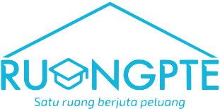

Ruang PTE adalah lembaga bimbingan persiapan Pearson Test of English (PTE Academic) resmi di Kampung Inggris Pare, Kediri. Khusus dirancang untuk pejuang Working Holiday Visa (WHV) Australia, studi luar negeri, dan visa keahlian.
WhatsApp 0851-2123-4414 Tanya program dan pendaftaran lewat chatKetuk salah satu baris untuk membukanya di tab baru.